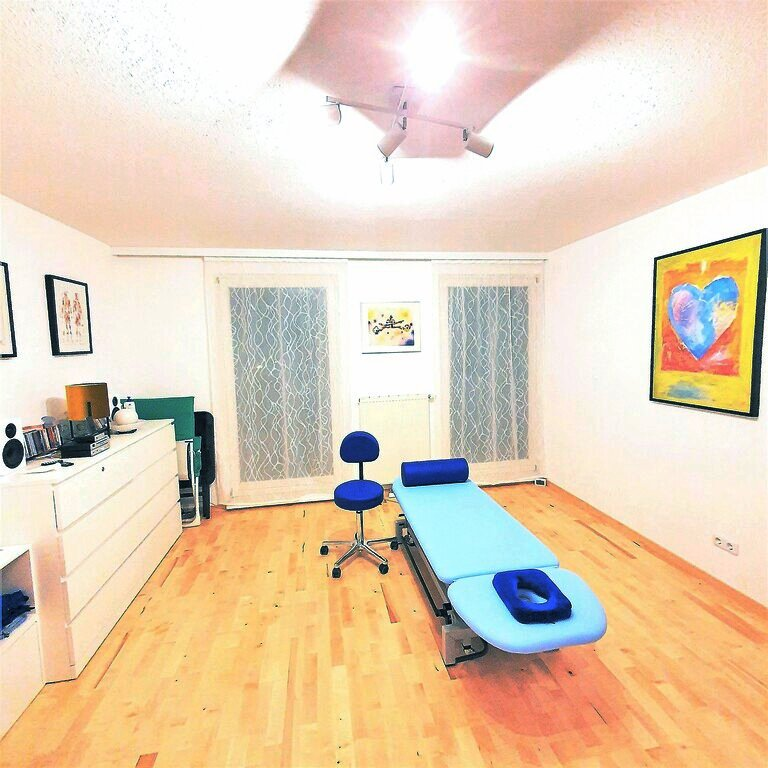
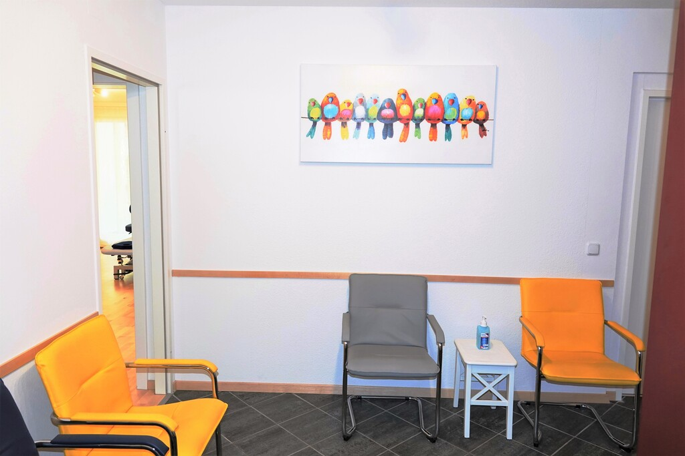
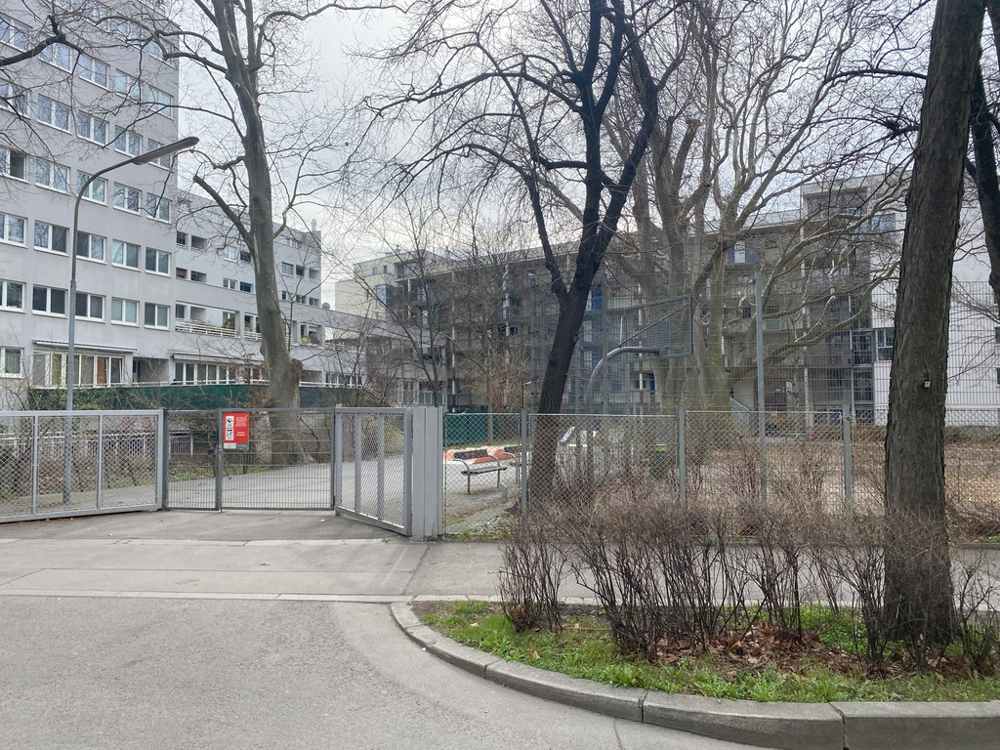
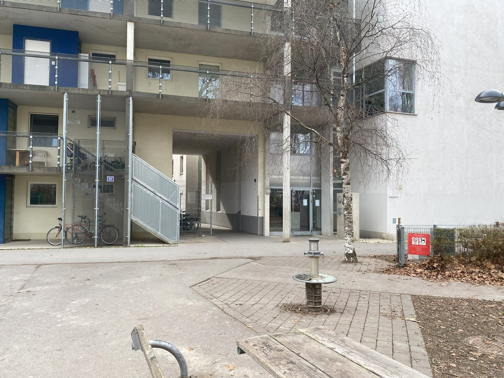
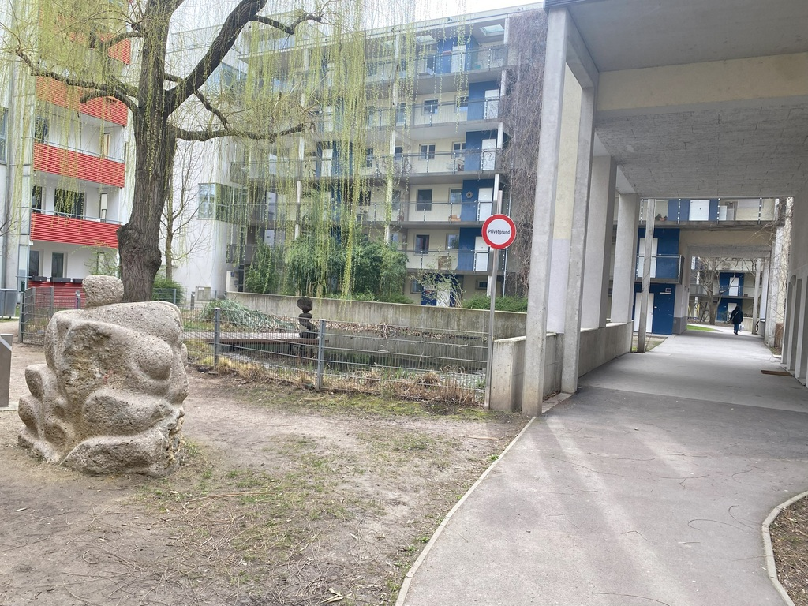
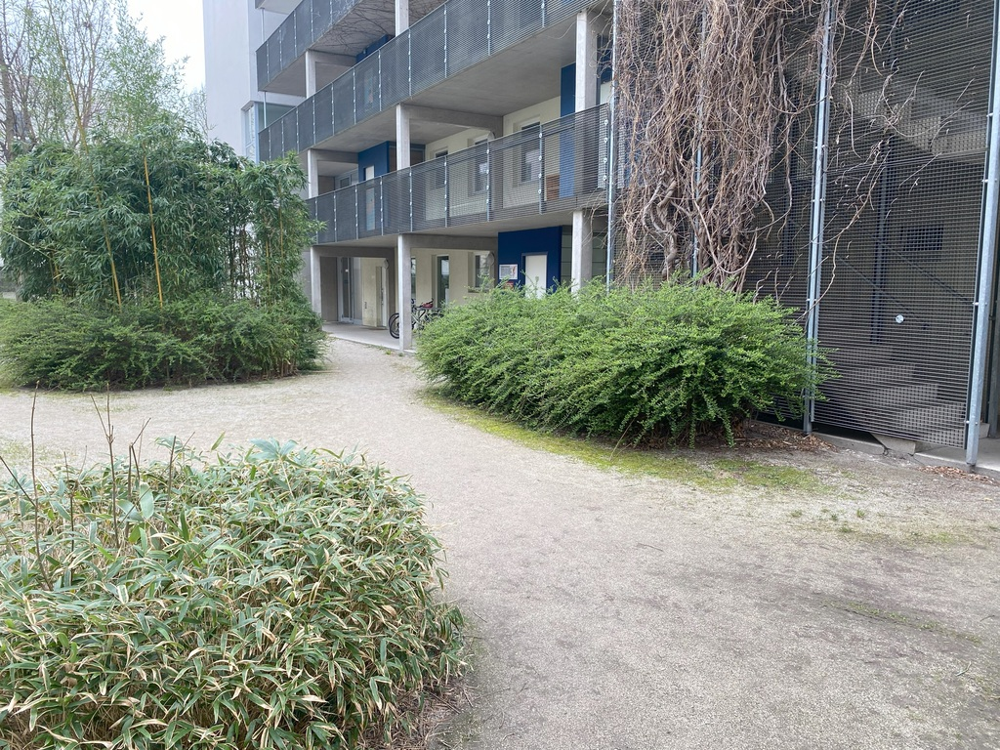
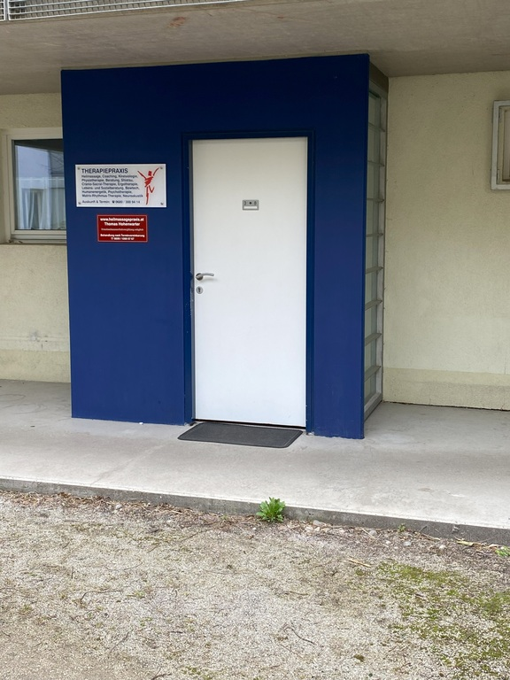
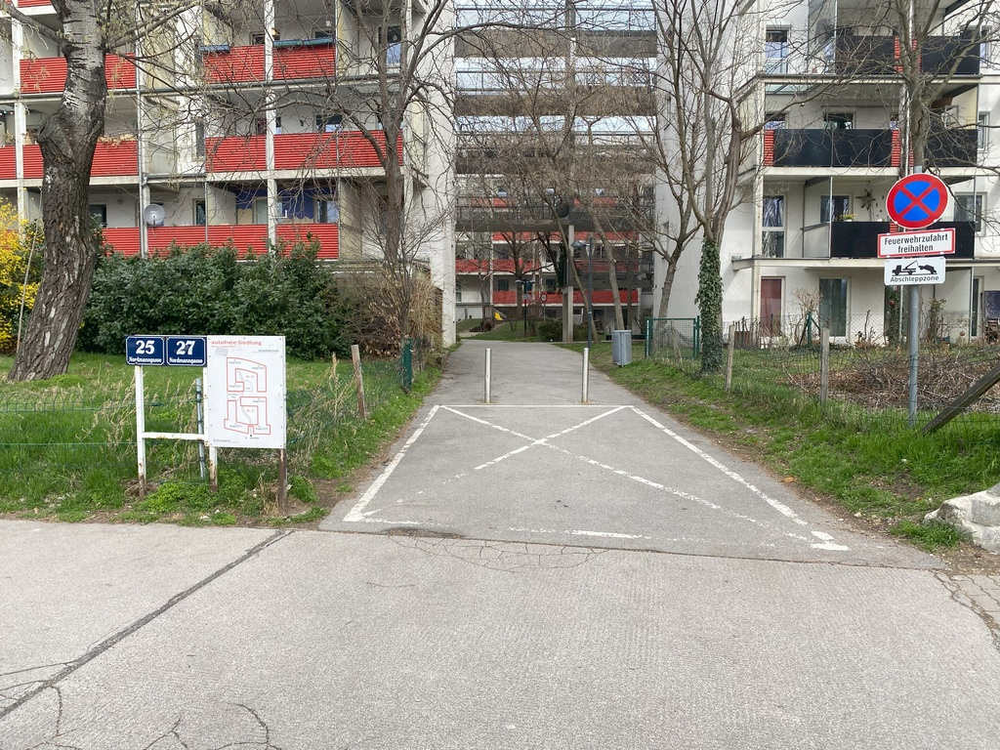
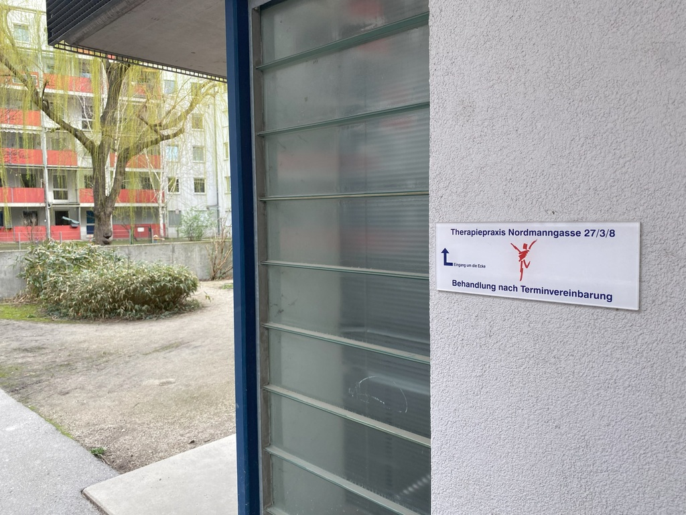

Praxis für Physiotherapie Monica Mattenberger · 1210 Wien
Bewegung, die wieder gut tut.
Individuelle Physiotherapie in ruhiger Atmosphäre in Wien-Floridsdorf — abgestimmt auf Ihren Körper und Ihren Alltag. Nach einer genauen Befundung erstelle ich ein Therapieprogramm, das zu Ihnen passt.
Willkommen
Monica Mattenberger
Physiotherapeutin seit 2002 nach vierjähriger Ausbildung in der Schweiz, selbstständig in Wien seit 2011.
Ausbildung
- Physiotherapie-Ausbildung an der Schule für Physiotherapie in Schinznach Bad, Schweiz (Ausbildungsdauer: 4 Jahre, Abschluss 2002), Nostrifikation des schweizerischen Physiotherapie-Diploms in Österreich
- Gymnastikpädagogik-Ausbildung an der Gymnastikdiplomschule GDS in Basel (Abschluss 1995)
Wichtige berufliche Stationen
- Selbständige Physiotherapeutin in Wien (seit 2011)
- Physiotherapeutin beim Regionalspital La Carità in Locarno, Schweiz (Schwerpunkte: Orthopädie, Medizin, Chirurgie, Neurologie)
- Physiotherapeutin bei der Spezialklinik aarReha in Schinznach Bad, Schweiz (Schwerpunkte: Rehabilitation, Rheumatologie und Osteoporose)
Zentrale Fortbildungen
- „Spiraldynamik® Diploma Intermediate" auf Basis zahlreicher Kurse (z.B. Pädiatrie, Fuß, Becken, Überlastungssyndrome am Bein, Schultergürtel, Fachdidaktik)
- „Craniosacrale Berührung"
- K-Taping & K-Active-Taping Sondertechniken
- Lymphdrainage nach Dr. Vodder
- Fasziendistorsionsmodell nach Typaldos (FDM)
- Atemphysiotherapie
- Neuromobilisation (NOI)
- Funktionelle Bewegungslehre
- Kommunikationskurs nach „Gordon" speziell für medizinisches Personal
„Ich helfe Ihnen, einen Weg zu mehr Wohlbefinden zu finden. Durch unsere gemeinsame Arbeit werden scheinbar undenkbare Bewegungen zur Realität!"Monica Mattenberger
Behandlung
Therapieformen
Durch meine fundierte Ausbildung und umfangreiche Fortbildungen kann ich für Sie maßgeschneidert aus einer Reihe von Therapieformen auswählen. Für weitere Infos bitte auf die jeweilige Therapieform klicken.
Spiraldynamik®
Anwendungsbeispiele: Orthopädische und rheumatologische Erkrankungen, Osteoporose, nach Operationen
Das Wissen um anatomisch korrekte Haltung und Bewegung leitet uns hin zum richtigen Gebrauch unseres Körpers. Durch einfache Übungen lernen Sie sehr schnell, dass zum Beispiel Ihre Rückenprobleme stark mit der Stellung Ihrer Beine und Füße zusammenhängt. Nebenbei wird dann in den Übungen für den Rücken auch der Hallux am Großzeh mitbehandelt. Oder dass Schulter-Arm-Probleme immer auch mit Rumpf- und Kopfhaltung zu tun haben.
In der Therapie wird Ihnen das falsche im Vergleich mit dem richtigen Bewegungsmuster bewusst gemacht. Dann wird das anatomisch richtige Bewegungsverhalten angebahnt und geübt. Das Ziel ist, neues und richtiges Bewegen im Alltag zu integrieren. Dadurch kommt es zu Erfolgserlebnissen und einer neuen Bewegungsfreude.
Spiraldynamik® ist ideal für Menschen, die ihre Gesundheit in die eigenen Hände nehmen wollen. Kommentar einer meiner Patientinnen: „Ich habe gehen gelernt. … In jedem Schritt steckt eine Übung." Ein Freund zu einer Spiraldynamik®-geübten Läuferin: „Du läufst ja mit einer unglaublichen Leichtigkeit!"
Weitere Informationen: Spiraldynamik®
Lymphdrainage
Anwendungsbeispiele: Wasser in den Beinen, Lip-/Lymphödem, nach Operationen
Lymphdrainage ist eine Technik, die stark Heilungsprozesse anregt. Klassischerweise kommt sie in folgenden Bereichen zum Einsatz:
- Bei Lymphödemen, also bei sogenanntem „Wasser in den Beinen",
- nach Operationen, um den Heilungsprozess zu unterstützen,
- nach (Brust)krebsoperationen,
- zum Ausleiten von Schlackenstoffen begleitend zu Fastenkuren,
- bei chronischen Entzündungen der Nasennebenhöhlen.
Die Lymphdrainage ist eine extrem beruhigende und entspannende Technik. Die Griffe sind immer ganz sanfte Streichungen und Drehungen auf der Haut, die die Lymphflüssigkeit anregen, sich zu bewegen. Auf diese Weise wird ein Teil der mobilisierten Lymphe in den Blutstrom eingespeist und letztlich über den Urin ausgeleitet. So erhöht sich das Wohlbefinden und Heilungsprozesse werden gefördert.
Weitere Informationen: Österreichische Lymph-Liga
Atemtherapie
Anwendungsbeispiele: COPD, Post-Covid, Atemfunktionsstörungen
Wir atmen ständig, ohne darüber nachzudenken. Atmen ist selbstverständlich – richtiges Atmen nicht unbedingt.
Bei Lungenkrankheiten (COPD, nach Covid-Erkrankungen) oder Lungenschädigungen, aber auch bei Atemfunktionsstörungen bieten sich spezifische Übungen aus dem Bereich der Atemphysiotherapie an. Dadurch lässt sich die Atmung sowohl auf willkürliche als auch unwillkürliche Weise beeinflussen.
Die Therapie nutzt beide Bereiche, um zumindest den Status quo zu erhalten oder das Atmen dauerhaft zu verbessern.
Craniosacral-Therapie
Anwendungsbeispiele: Verspannungen, Schmerzen, Traumata
Diese Therapie ist eine manuelle Behandlungsform, die sich aus der Osteopathie heraus entwickelt hat. Im feinen Pulsieren der Gehirn- und Rückenmarksflüssigkeit lässt sich der craniosacrale Rhythmus erspüren. Da dieser sich im ganzen Bindegewebe ausbreitet, ist er im ganzen Körper tastbar.
Für die Behandlung ist die Qualität der rhythmischen Bewegung ausschlaggebend. Durch eine gezielte Therapie kann diese unterstützt und harmonisiert werden. Es können sich Verspannungen und Bewegungseinschränkungen lösen, Schmerzen können reduziert werden.
Insgesamt ist dies eine sehr entspannende und beruhigende Therapie.
Weitere Informationen: Cranio-Austria
Funktionelle Bewegungslehre
Anwendungsbeispiele: Orthopädische Erkrankungen (Rücken, Hüfte, Knie, …), Osteoporose, nach Operationen
Oft bewegen wir uns „unnatürlich", weil wir so einem Schmerz ausweichen können. Der kurzfristige Vorteil wird oft durch langfristige Nachteile erkauft, wie z.B. Haltungsschäden oder Abnützungserscheinungen an Gelenken.
Die Methode der funktionellen Bewegungslehre (FBL) dient dazu, wieder eine natürliche, Ressourcen schonende Bewegung in Gang zu bringen.
Ein Therapieprogramm wird durch vorgängiges Beobachten und Analysieren des Bewegungsablaufs erstellt. Die eigentliche Therapie ermöglicht durch die geplanten, gezielten Übungen eine neue, harmonischere Bewegung.
Manuelle Therapie
Anwendungsbeispiele: Verspannungen, Blockierungen, Schmerzen in Gelenken
Unter Manuelle Therapie fallen diverse Techniken wie
- Triggerpunkt-Techniken zum Lösen von Verspannungen,
- Maitland-Techniken zur Mobilisierung von Gelenken und Lösen von Blockaden,
- FDM (Faszien-Distorsions-Modell) zum Lösen von verklebten Faszien,
- Massage-Techniken.
Weitere Informationen: Österreichischer Verein für Manuelle Physiotherapie ÖVMPT
Selbstmobilisation nach McKenzie
Anwendungsbeispiele: Bandscheibenvorfall / Hexenschuss
Bei einem Bandscheibenvorfall mit oder ohne Ausstrahlungen oder auch bei unspezifischen Schmerzen in der Wirbelsäule kann die Technik nach McKenzie eine effiziente Methode zur Linderung der Schmerzen sein.
In der Untersuchung wird nach Positionen und Bewegungen gesucht, mit denen der Patient seine Symptome selbst beeinflussen kann.
Die regelmäßige Anwendung dieser Selbstbehandlungsverfahren soll dem Patienten die Möglichkeit geben, sein Problem selbst in den Griff zu bekommen. D.h., es wird eine grösstmögliche Unabhängigkeit vom Therapeuten angestrebt. Dieser hilft dem Patienten durch ergonomische Instruktionen und Haltungskorrekturen, eine nachhaltige Verhaltensänderung zu erlangen.
Weitere Informationen: McKenzie Institut
Beckenboden-Gymnastik
Anwendungsbeispiele: Inkontinenz, Blasenschwäche, Beckenbodensenkung, Hämorrhoiden, Rückenschmerzen
Der Beckenboden ist die Muskulatur, die das Becken wie eine federnde, mehrschichtige Matte nach unten abschließt. Sie steht in engem Zusammenhang mit Rücken- und Bauchmuskulatur. Der Beckenboden stützt die inneren Organe und verhindert ein Abrutschen nach unten. Er steuert u.a. die Funktion der Blase und des Darmes.
Der Beckenboden kann mit einfachen Übungen aktiviert werden. Dieser so gestärkte Beckenboden hilft bei
- Inkontinenz (Blasenschwäche)
- Beckenbodensenkung
- Hämorrhoiden
- Rückenschmerzen
Weitere Informationen: Beckenboden Gesellschaft Österreich
Neuromobilisation (NOI)
Anwendungsbeispiele: Bandscheibenvorfall, Karpaltunnel-Syndrom, unspezifische Schmerzsyndrome
Bei diversen Beschwerden ist oft die gestörte Wechselwirkung eines Nervs und seinen umliegenden Geweben die Schmerzursache.
Beispiele hierfür sind
- Bandscheibenvorfall (mit Ausstrahlungen ins Bein oder Cervicalsyndrom mit Ausstrahlungen in den Arm),
- Karpaltunnelsyndrom und
- unspezifische Schmerzsyndrome in den Gliedmaßen.
Bei einem Bandscheibenvorfall drückt die Bandscheibe auf den Nerv und führt zu einer Entzündung mit einhergehenden Schmerzen.
In diesen und ähnlichen Fällen empfiehlt sich oft die Neuromobilisation (NOI). Bei dieser kann durch spezielle Techniken der relevante Nerv bewegt und gedehnt werden, um diesen von Verklebungen mit seinem Umfeld zu lösen. Dadurch lassen sich die Schmerzen dauerhaft lösen.
Kinesio-Taping
Anwendungsbeispiele: Sehnenprobleme, Gelenkschmerzen, Beschwerden beim Sport
Bei einer Reihe von Beschwerden im Bereich der Muskeln, der Gelenke, der Lymphe und der Nerven erweist sich Kinesio-Taping (kurz K-Taping oder Taping) als eine wertvoll unterstützende Methode.
Kinesio-Tape steht frei übersetzt für „bewegliches Hautklebeband". Das Tape wird mit verschiedenen Techniken in mannigfaltigen Formen auf die Haut aufgeklebt. Beispielsweise entspannt oder aktiviert es Muskeln, verbessert die Stabilität und Beweglichkeit von Gelenken, aktiviert das Lymphsystem und reduziert Schmerzen.
Kinesio-Taping hat ein sehr breites Anwendungsfeld:
- Bei Gelenkschmerzen, z.B. Knieschmerzen, Arthrose am Kniegelenk, ein verstauchter Knöchel,
- bei Muskelspannungsstörungen, wie z.B. ein verspannter Nacken vom Sitzen im Büro, Schleudertrauma,
- bei Sehnenproblemen wie Tennisarm, Karpaltunnelsyndrom, Sehnenrissen, Sehnenscheidenentzündungen, Bizepssehnenreizung, Schulterimpingement, Probleme mit der Achillesferse,
- nach Operationen zur Nachbehandlung entstandener Narben, Entstauung nach Knieoperationen und Blutergüssen,
- im Sport zur Entlastung von stark belasteten Strukturen wie Muskelgruppen, Gelenken, Sehnen und Bändern sowie nach Muskelfaserrissen,
- in der Lymphtherapie, z.B. bei der Nachsorge von Brustkrebsoperationen, Entstauung von Lymphödemen,
- muskuläre Mitbeteiligung bei Migräne und Tinnitus, Menstruationsbeschwerden, Inkontinenz.
Das Tape wird auf die Haut aufgeklebt und wirkt sofort schmerzlindernd, entlastend oder stabilisierend auf die beanspruchte Struktur. Ein längerfristiges muskuläres Aufbautraining oder eine einzuübende Verhaltensänderung kann es nicht ersetzen. Jedoch kann der Einsatz des Tapes während dieser Zeit die Therapie wunderbar unterstützen. Es wirkt gleichsam als Katalysator!
Fußtherapie
Anwendungsbeispiele: Fußfehlstellungen, Hallux, Hammerzehen
Knickfuß, Senkfuß, Spreizfuß, Hohlfuß, Metatarsalgie und Hallux valgus können starke Schmerzen verursachen. In der Therapie werden die Füße unter Berücksichtigung der gesamten Körperstatik analysiert. In einem weiteren Schritt wird Ihnen das falsche im Vergleich mit dem richtigen Bewegungsmuster bewusst gemacht. Dann wird das anatomisch richtige Bewegungsverhalten angebahnt und geübt. Das Ziel ist, neues und richtiges Bewegen im Alltag zu integrieren. Dadurch kommt es zu Erfolgserlebnissen und einer neuen Bewegungsfreude. Kurz: Happy Feet!
Die Praxis
Praxisräumlichkeiten
Die Praxis besteht aus einem ruhig gelegenen Therapieraum mit bequemer Liege.
Angeschlossen daran ist ein kleiner Wartebereich mit Kundentoilette.


Praktisches
Ihr Termin
Alles Wichtige vor Ihrem Besuch — tippen Sie auf einen Punkt für Informationen.
In der Praxis sind übliche Terminfenster:
Montag von 18:20 bis 21:20,
Dienstag von 15:00 bis 19:00,
Mittwoch von 07:00 bis 12:00,
Freitag von 17:00 bis 19:00
Hausbesuche nach Anfrage, bevorzugt im 21. und 22. Wiener Gemeindebezirk (1210 Floridsdorf und 1220 Donaustadt).
Allgemeine Anfragen und Terminvereinbarungen bitte ausschließlich telefonisch unter +43-650-60 22 101.
Falls Sie mich nicht erreichen, hinterlassen Sie bitte eine kurze Sprach- oder Textnachricht (SMS) mit der Bitte um eine Rückantwort.
Ich bin Wahlphysiotherapeutin. Daher brauchen Sie eine ärztliche Verordnung für Physiotherapie, die möglicherweise vorab von der Krankenkasse bewilligt werden muss, wenn Sie um eine anteilige Kostenrückerstattung ansuchen wollen.
Mehr zur Bewilligung sowie den rückerstattbaren Kostenanteil erfragen Sie bitte bei Ihrer Krankenkasse, z.B. ÖGK, SVS, BVA.
Die Praxis befindet sich in Wien nahe der Bezirksgrenze zwischen Floridsdorf (21. Bezirk) und Donaustadt (22. Bezirk) direkt an der Verbindungsachse Donaufelderstraße, 100 Meter entfernt von der Haltestelle Fultonstraße der Straßenbahnlinien 25/26/27.
Exakter Ort via openstreetmap.org
Fahrplan zur Anfahrt von außerhalb Wien / mit den Öffis / zu Fuß / mit dem Rad
Erreichbarkeit mit öffentlichen Verkehrsmitteln von der Haltestelle „Fultonstraße"
Der Ort ist sehr leicht mit öffentlichen Verkehrsmitteln erreichbar. Direkt an der Haltestelle befindet sich südseitig ein kleiner Park mit Spielplatz unter hohen Bäumen. Hinter den Bäumen beginnt die „autofreie Siedlung".

Durch einen 2-stöckigen Durchgang gelangen Sie in deren ersten Innenhof mit Teich.


Direkt nach dem zweiten Durchgang und hinter dem Teich liegt der Eingang zur Praxis, Tür 27/3/8. Mehrere Schilder weisen auf die Praxis-Räumlichkeiten hin.

Erreichbarkeit über die Nordmanngasse mit Fahrrad oder Auto
Die Praxis ist auch von der Nordmanngasse her zugänglich.
Dort ist eine Anreise mit dem Fahrrad erleichtert, da die Nordmanngasse am Radwegnetz liegt, durch das Floridsdorf mit Kagran / Donauzentrum über das Donaufeld verbunden ist.
Für eine Anreise mit dem Auto gibt es diverse öffentliche Parkmöglichkeiten in der Nähe. Wichtig: Parkpickerl-Zone! Auch wenn in Teilen der Nordmanngasse ein Halteverbot besteht, so können doch vorhandene Buchten entlang der Straße zum Ein- und Aussteigen genutzt werden.

Die Siedlung ist an den roten Balkonverblendungen und den hohen Bäumen davor erkenntlich. Ein breiter Durchgang führt in die Innenhöfe. Nach dem Innenhof mit kleinem Spielplatz kommt auf dem Hauptweg ein zweiter Durchgang, in dem bereits ein erstes Hinweisschild zur Praxis angebracht ist.

Direkt nach dem zweiten Durchgang geht es nach rechts wie auf dem Schild angedeutet.
